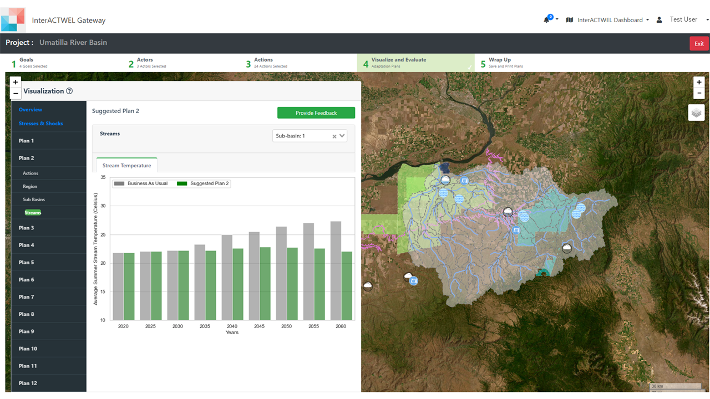
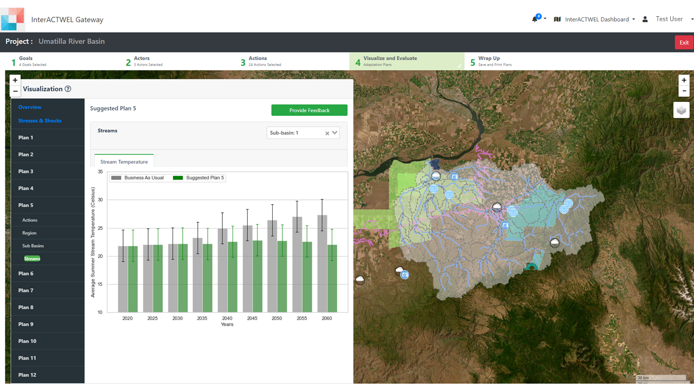
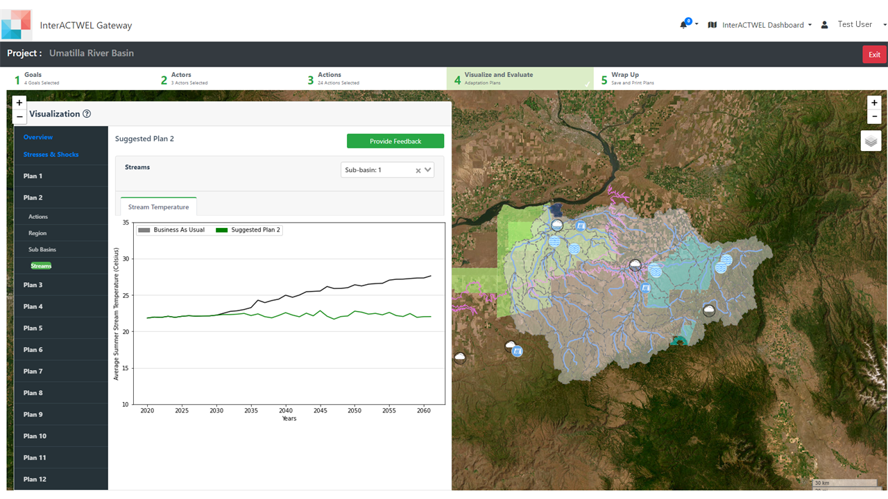
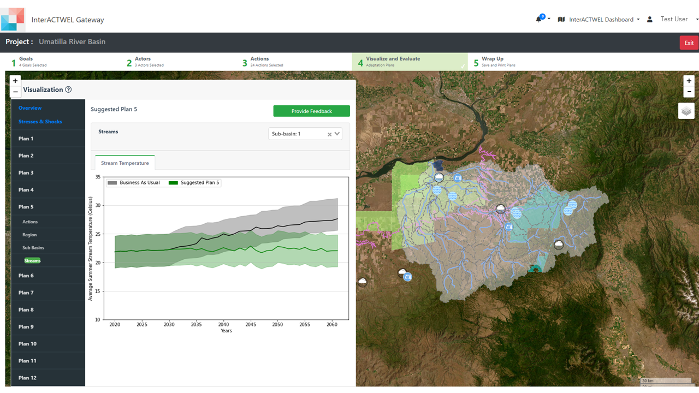
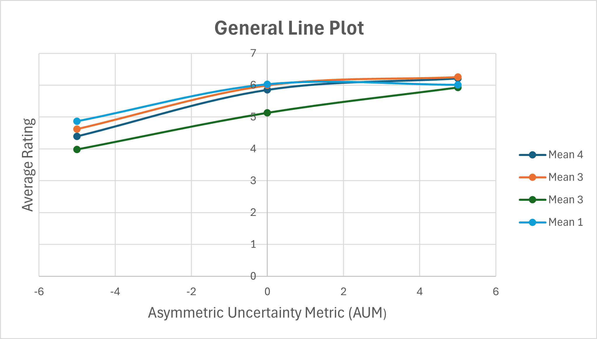

| Post-Survey Aggregate Data (Sample) | |||||||||
|---|---|---|---|---|---|---|---|---|---|
| ID | Usertype (1 = Student, 2 = People, 3 = Watershed Council) | Consideration of Future Consequences (Total Sum) | Resistance to Change (Average) | General Risk Propensity (Average) | Numeracy Test (Count) | Mean 4 | Mean 3 | Mean 2 | Mean 1 |
| 1 | 3001 | 56 | 3.53 | 3.25 | 1 | 6.27 | 6.33 | 5.87 | 6.57 |
| 2 | 2001 | 57 | 2.88 | 2.88 | 6 | 4.37 | 4.63 | 4.67 | 5.67 |
| 3 | 1001 | 45 | 3.12 | 3.63 | 2 | 5.40 | 5.33 | 4.67 | 6.57 |
| 4 | 2002 | 55 | 2.76 | 3.25 | 7 | 6.37 | 6.17 | 5.90 | 6.70 |
| 5 | 1002 | 57 | 2.88 | 3.88 | 7 | 5.83 | 6.00 | 6.00 | 6.00 |
| 6 | 3002 | 62 | 2.82 | 2.63 | 4 | 6.67 | 6.53 | 5.07 | 6.87 |
| 7 | 1003 | 66 | 1.65 | 4.63 | 6 | 7.00 | 7.00 | 7.00 | 7.00 |
| 8 | 1004 | 44 | 2.18 | 5.00 | 7 | 5.43 | 5.47 | 6.77 | 6.77 |
| 9 | 1005 | 60 | 1.65 | 2.38 | 4 | 5.33 | 5.47 | 4.33 | 4.33 |
| 10 | 1006 | 63 | 2.29 | 4.13 | 4 | 1.83 | 2.13 | 2.03 | 2.03 |
Visualizing Temporal Uncertainty in Stream Temperature Data for Conservation Plans
Brian Cervantes Alvarez
October 10, 2024
Background and Objectives
Purpose: Investigate how visualizing uncertainty in stream temperature data affects conservation decisions, specifically riparian buffer implementation.
Goals:
- Compare comprehension and preferences using line plots vs. bar graphs.
- Examine the impact of numeracy skills and personality traits on interpreting uncertainty.
Research Questions
Visualization Impact: How do line plots vs. bar graphs influence stakeholders’ interpretation of stream temperature data and conservation preferences?
Cognitive Influences: How do numeracy skills and personality traits affect the interpretation of uncertainty visualizations in decision-making?
Study Design
Approach Comparative analysis of different graph types to assess understanding of stream temperature data.
Focus Areas
Graph Comparison Line graphs vs. bar graphs with asymmetric uncertainty metrics.
Numeracy & Personality (Berlin Numeracy Test) Influence of math skills and traits like willingness to change on conservation decisions.
Specific Tool Used for Data Collection
Berlin Numeracy Test The Berlin Numeracy Test measures participants’ ability to understand numerical information, especially when interpreting risks and uncertainty. In this study, it was used to assess how well participants could interpret uncertainty visualizations (e.g., line and bar graphs) related to stream temperature data. The test helps determine whether numeracy influences conservation decisions, such as the preference for riparian buffers, by controlling for individual differences in statistical comprehension.
The test was used to assess participants ability to accurately interpret uncertainty visualizations, ensuring that any differences in conservation decisions aren’t just due to a lack of statistical understanding.
By measuring numeracy, the study can account for individual differences in how participants process numerical information, helping to isolate the effects of graph types on decision-making.
Data Structure
- Target Observations
- Types of Individuals
- Surveys and Comparison
- Plots and Randomization
- Datasets
- Scoring System
The goal is to gather data from 100 individuals. Currently, there are 67 observations collected.
The study includes data from students, landowners, and watershed council members.
Four surveys were administered (two for bar plots and two for line plots). These surveys were randomized for each participant, and participants rated the visualizations based on how well they understood the data presented. They were collected via Qualtrics survey software.
The study features 12 plots in total. Nine of these plots display varying uncertainties using different summary statistics. Specifically, three were for asymmetric, three for symmetric, and three for exaggerated uncertainty, and three plots are deterministic (control, no uncertainty). The plot sequence was randomized for each participant.
Two datasets were created—one for the bar plot (2 surveys) and one for the line plot (2 surveys). The client plans to merge these datasets for combined analysis.
Participants rated the visualizations on a scale from 1 to 4 points, with two stages:
- Scores between 1 and 4: Represent doing nothing (no action).
- Scores between 4 and 7: Suggest riparian buffer recommendations.
Visuals





Measuring Uncertainty
DeterministicMeans Control plots without uncertainty.
EqualMean Symmetric uncertainty around the mean.
BiggerMaxMean Asymmetric uncertainty with a larger upper bound.
BiggerMinMax Exaggerated uncertainty in both directions.
Post Survey Data Design
| Type | Component | Description |
|---|---|---|
| Integer | Participant ID | Unique anonymized identifier |
| Categorical | Usertype | 1 = Student, 2 = People, 3 = Council Members |
| Integer | Future Consequences Consideration | Sum score on long-term impact consideration |
| Numeric | Resistance to Change | Score on adaptability to new ideas |
| Numeric | Risk Propensity | Score on tendency to take risks |
| Integer | Numeracy Test | Berlin Numeracy Test score (0-7) |
| Numeric | Mean Scores | Ratings of visualizations (1-7 scale) |
| Mean Scores for General Lineplot (Sample) | |||||||||||||||
|---|---|---|---|---|---|---|---|---|---|---|---|---|---|---|---|
| Deterministic M1 | Deterministic M2 | Deterministic M3 | Deterministic Avg | Equal Mean M1 | Equal Mean M2 | Equal Mean M3 | Equal Mean Avg | Bigger Max Mean M1 | Bigger Max Mean M2 | Bigger Max Mean M3 | Bigger Max Mean Avg | Bigger Min Max M1 | Bigger Min Max M2 | Bigger Min Max M3 | Bigger Min Max Avg |
| 5.80 | 6.50 | 6.00 | 6.27 | 5.10 | 6.90 | 7.00 | 6.33 | 4.50 | 6.40 | 6.70 | 5.87 | 5.80 | 6.90 | 7.00 | 6.57 |
| 4.00 | 6.10 | 3.00 | 4.37 | 3.30 | 6.10 | 4.50 | 4.63 | 4.60 | 4.50 | 5.00 | 4.37 | 3.00 | 5.50 | 3.50 | 4.00 |
| 6.20 | 4.00 | 6.00 | 5.40 | 7.00 | 4.00 | 5.00 | 5.33 | 7.00 | 1.00 | 6.00 | 4.67 | 7.00 | 5.00 | 5.00 | 5.67 |
| 5.10 | 7.00 | 7.00 | 6.37 | 5.40 | 7.00 | 6.10 | 6.17 | 5.10 | 6.50 | 6.10 | 5.87 | 6.10 | 7.00 | 7.00 | 6.73 |
| 4.50 | 7.00 | 7.00 | 5.83 | 4.50 | 6.50 | 7.00 | 6.00 | 4.50 | 6.50 | 7.00 | 6.00 | 4.50 | 6.50 | 7.00 | 6.00 |
| 6.00 | 7.00 | 7.00 | 6.67 | 5.60 | 7.00 | 7.00 | 6.53 | 4.60 | 6.10 | 7.00 | 5.07 | 6.60 | 7.00 | 7.00 | 6.87 |
| 7.00 | 7.00 | 7.00 | 7.00 | 7.00 | 7.00 | 7.00 | 7.00 | 6.10 | 7.00 | 7.00 | 6.57 | 7.00 | 7.00 | 7.00 | 7.00 |
| 3.10 | 6.20 | 7.00 | 5.43 | 4.00 | 5.40 | 7.00 | 5.47 | 4.00 | 7.00 | 6.00 | 5.67 | 6.30 | 7.00 | 7.00 | 6.77 |
| 3.50 | 5.50 | 7.00 | 5.33 | 3.50 | 1.50 | 7.00 | 2.00 | 3.60 | 1.80 | 1.00 | 2.13 | 4.00 | 7.00 | 6.00 | 5.67 |
| 3.00 | 1.50 | 6.00 | 1.83 | 4.40 | 6.40 | 6.60 | 5.80 | 4.00 | 4.50 | 6.30 | 4.93 | 4.50 | 5.00 | 5.50 | 5.00 |
| Mean Scores for Combined Bar Graph (Sample) | |||||||||||||||
|---|---|---|---|---|---|---|---|---|---|---|---|---|---|---|---|
| Deterministic M1 | Deterministic M2 | Deterministic M3 | Deterministic Avg | Equal Mean M1 | Equal Mean M2 | Equal Mean M3 | Equal Mean Avg | Bigger Max Mean M1 | Bigger Max Mean M2 | Bigger Max Mean M3 | Bigger Max Mean Avg | Bigger Min Max M1 | Bigger Min Max M2 | Bigger Min Max M3 | Bigger Min Max Avg |
| 4.00 | 5.70 | 6.50 | 5.40 | 4.90 | 5.10 | 6.00 | 5.33 | 4.00 | 6.10 | 4.80 | 4.97 | 5.80 | 6.90 | 7.00 | 6.57 |
| 6.00 | 5.50 | 7.00 | 6.17 | 6.00 | 7.00 | 6.50 | 6.50 | 6.00 | 5.80 | 6.30 | 6.17 | 3.00 | 5.50 | 3.50 | 4.00 |
| 4.00 | 3.00 | 1.00 | 2.67 | 2.00 | 1.00 | 1.00 | 1.33 | 7.00 | 3.00 | 2.00 | 4.00 | 7.00 | 5.00 | 5.00 | 5.67 |
| 5.00 | 5.60 | 7.00 | 5.87 | 5.10 | 7.00 | 7.00 | 6.37 | 4.30 | 4.70 | 6.20 | 5.07 | 6.10 | 7.00 | 7.00 | 6.73 |
| 4.70 | 7.00 | 7.00 | 6.57 | 5.00 | 5.00 | 7.00 | 5.67 | 5.00 | 2.00 | 4.00 | 3.67 | 4.50 | 6.50 | 7.00 | 6.17 |
| 7.00 | 7.00 | 7.00 | 7.00 | 7.00 | 7.00 | 7.00 | 7.00 | 7.00 | 7.00 | 7.00 | 7.00 | 4.50 | 5.00 | 5.50 | 5.00 |
| 6.30 | 7.00 | 7.00 | 6.77 | 1.00 | 2.00 | 6.10 | 3.03 | 2.00 | 2.00 | 2.00 | 2.00 | 3.60 | 1.50 | 1.00 | 2.03 |
| 5.30 | 6.00 | 6.50 | 5.93 | 5.70 | 5.60 | 6.10 | 5.80 | 5.40 | 5.80 | 6.30 | 5.77 | 4.00 | 4.50 | 6.30 | 4.93 |
| 2.40 | 1.80 | 1.80 | 1.73 | 3.30 | 1.50 | 1.10 | 1.97 | 3.50 | 1.90 | 1.90 | 2.43 | 4.00 | 4.50 | 6.30 | 4.93 |
| 4.60 | 5.20 | 5.60 | 5.13 | 4.50 | 4.80 | 5.70 | 5.00 | 4.40 | 6.10 | 7.00 | 5.83 | 3.60 | 1.50 | 1.00 | 2.03 |
Scope of Inference
Current Data Primarily from Oregon, with some Washington participants.
Generalizability Results are most applicable to Oregon. Further data needed for Pacific Northwest-wide conclusions.
Assistance Client is Requesting
Statistical Methods
Correlation Analysis: Select suitable techniques to explore variable relationships.
Linear Regression: Perform analyses with independent variables (graph type, numeracy, traits) and dependent variable (ratings).
Interpretation of Results
Correlation Refinement: Strategies to interpret and refine variable correlations.
Regression Analysis: Methods to assess relationships in regression models.
Reporting Results: Best practices for clear and impactful summary for stakeholders.
Data Presentation: Guidance on effective display and presentation of analyzed data.